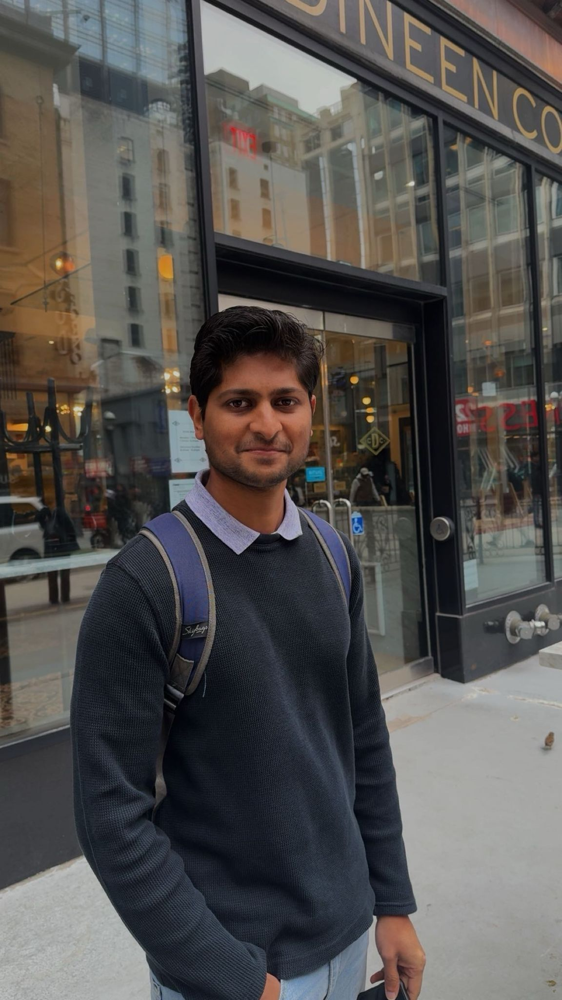

I enjoy solving hard systems problems and building software that works in the real world. I’m particularly interested in reliability, observability, and designing systems that scale beyond the happy path.
View My ExperienceI’m a Backend / Systems Engineer with 5+ years of experience building and operating reliable distributed systems in fast-paced startup environments. I’ve grown rapidly from an individual contributor into a Staff Software Engineer, with experience mentoring engineers and leading teams through critical technical decisions.
I’ve owned backend services, infrastructure, and Linux-based edge AI systems end-to-end—spanning deployment orchestration, backend APIs, and system observability across edge devices, on-prem data centers, and cloud environments. My work sits at the intersection of distributed systems, backend application development, and infrastructure, with a strong focus on operating software in production.
I don’t just write code — I think deeply about system design, failure modes, and long-term operability. With a strong foundation in computer science and systems engineering, I enjoy building scalable systems from the ground up and helping teams develop sound engineering practices.
When I’m not working, you’ll usually find me playing or watching soccer, hiking, skiing, traveling, working on a hobby project, or keeping up with the news — technology, politics, economics, and current affairs.
Based in Seattle, WA. Open to new opportunities!

Relevant coursework include Distributed Systems, Computational Science, Algorithms, Linear Algebra, Computer Vision and Image Processing, Machine Learning, Information Retrieval, Pattern Recognition, Decision Analysis
Relevant coursework include Data Structures and Algorithms, Object-Oriented Programming, Computing Techniques, Digital Image Processing, Embedded Systems, Microprocessors, Microcontrollers, Integrated Circuits, Digital Logic Theory, Digital Signal Processing, Control Engineering, Process Control, Thermodynamics and Fluid Theory
(Selected academic and personal projects)
"Ajith is one of the best research students I have had an opportunity to work with over the last decade. It is enough if you ask him to do something – he would go at it with complete commitment... He is a constant learner and reads extensively."
"With full faith in his intelligence, hard work and personality, I strongly recommend him for any role offered to him."
"Ajith is a highly skilled engineer who has an incredible ability to digest and comprehend even the most complicated tasks... I would be pleased to have him on any team I work with in the future."
"Ajith is a brilliant engineer, and a great person. He is one of the most talented developers I've worked with, and truly a hardworking colleague, always pushing for the best outcomes."
"Ajith demonstrated both a willingness and eagerness to jump into unfamiliar territory... He continues to have a measurable positive effect on achieving the team goals even though he is part-time."
"He has engaged and collaborated with the team well... The team appreciated his contribution to the overall team goals... He presented a couple of presentations to the department VP which went well."
"Ajith is an excellent programmer who enjoys and excels in a work environment. He is a team player... It has been a pleasure to manage Ajith as he always knew the priorities and does the work on time."
Currently leading the engineering effort at RadiusAI. Whether it’s a hobby project, an early-stage startup ideas, a complex system architecture, or a new professional opportunity, I’m always open to a deep-dive technical discussion.